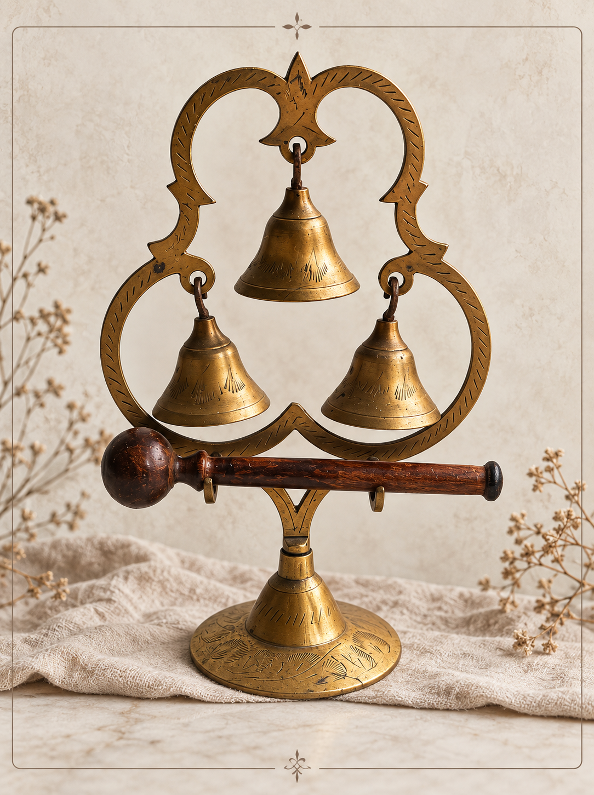

⁂ ♡ ⁂
A COLLECTING NOTEBOOK
Collected
curiosities.
Old things, odd details, and objects with a little mystery.
A place for the pieces that stop time.
Take a closer look ↘
01 / THINGS THAT CATCH MY EYE
A few objects.
⁂
Woven
histories
PHOTOGRAPH TO COME
NO. 01 / TEXTILES
Woven coverlets
Rhythmic patterns, softened colors, and tiny
irregularities left by a maker’s hand.
Textiles that invite a closer look.
Details worth noticing
The weave, the edges, the reverse, and any woven
names or dates. Each detail offers another
question to follow.

⁂
A maker’s
mark
PHOTOGRAPH TO COME
NO. 02 / FOLK ART
Carved & curious
A peculiar little animal, a painted surface,
a shape that feels wonderfully imperfect.
Objects full of their maker’s personality.
Details worth noticing
Tool marks, traces of paint, and the way a figure
balances on its base. Sometimes the smallest
gesture gives an object its character.
⁂
Everyday
wonders
PHOTOGRAPH TO COME
NO. 03 / EVERYDAY OBJECTS
Beautifully useful
The quiet appeal of an old pitcher, a small wooden
box, or a well-worn frame. Familiar things with
unexpectedly lovely details.
Details worth noticing
A handle worn smooth, an unusual hinge, a stamp
underneath. Small clues to how something was
made and how it may have been used.
02 / A NOTE ON COLLECTING
discovering
the softness of time
I’m drawn to the things that carry traces of another
life: a faded pattern, an unexpected shape, a detail
someone took the time to make by hand.
This notebook is a place to follow that curiosity,
gather inspiration, and share what catches my eye.
Share a curious find ↗